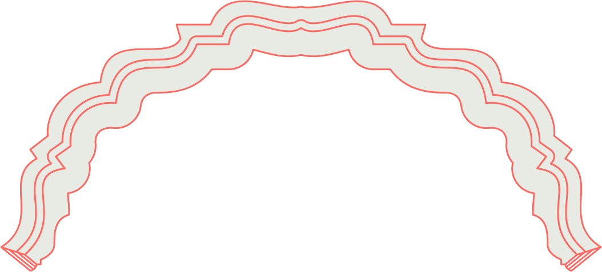
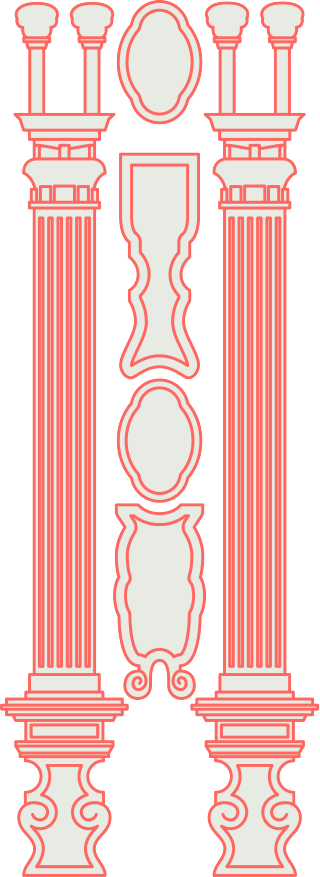
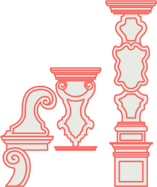
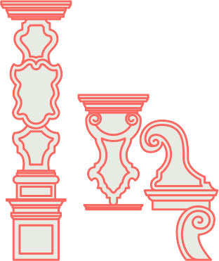
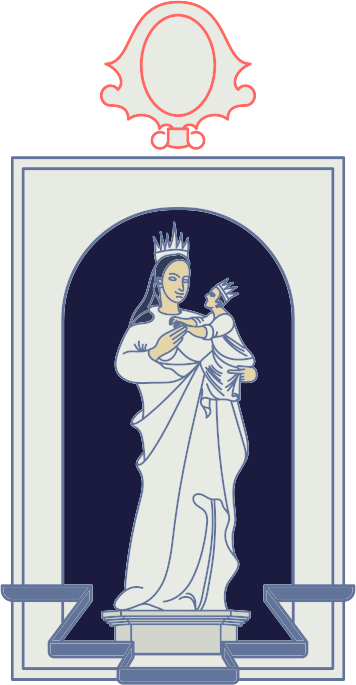
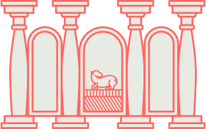

<div style='display:block;'>
	
	
	<div class='estantero' style='width:100%;display:block;'>
		<div class='droppable pieza1' rel='pieza_1' style='padding-top:2%;display:block;width:31%;margin-left:35.3%;margin-right:32%;position:relative;z-index:110;'></div>
		<div class='droppable pieza2' rel='pieza_2' style='display:block;width:90%;margin-top:-9%;margin-left:5%;margin-right:5%;position:absolute;z-index:100;'></div>
		<div class='droppable pieza3' rel='pieza_3' style='display:block;width:31%;margin-top:-0.5%;margin-left:35.5%;margin-right:30%;position:relative;z-index:190;'></div>
		
		<br/>
		<div class='droppable pieza4' rel='pieza_4' style='display:block;width:26.3%;margin-top:-29.4%;margin-left:9.6%;margin-right:30%;position:absolute;z-index:180;'></div>
		<div class='droppable pieza5' rel='pieza_5' style='display:block;width:26.3%;margin-top:-29.4%;margin-left:64%;position:absolute;z-index:180;'></div>
		<div class='droppable pieza6' rel='pieza_6' style='display:block;width:88.4%;margin-top:-4.2%;margin-left:5.7%;position:absolute;z-index:20070;'></div>
		<div class='droppable pieza7' rel='pieza_7' style='display:block;width:27.3%;margin-top:5%;margin-left:8.5%;position:absolute;z-index:60;'></div>
		<div class='droppable pieza7' rel='pieza_7' style='display:block;width:27.3%;margin-top:5%;margin-left:63.9%;position:absolute;z-index:60;'></div>
		<div class='droppable pieza8' rel='pieza_8' style='display:block;width:30.3%;margin-top:4%;margin-left:34.8%;;position:absolute;z-index:60;'></div>
		<div class='droppable pieza9' rel='pieza_9' style='display:block;width:28.8%;margin-top:62.6%;margin-left:36.2%;position:relative;z-index:60;'></div>
		
	</div>
</div>
<div style='display:block;clear:both;'>
	<br/>
	
	<br/>
		<div id='cont_piezas' style="width:100%;float:left;display:block;height:135px;display:block;">
		
		<div class='m1 draggable pieza_1 dragacti4' rel='m_1'>
			
		</div>
		<div class='m2 draggable pieza_2 dragacti4' rel='m_2'>
			
		</div>
		<div class='m3 draggable pieza_3 dragacti4' rel='m_3'>
			
		</div>	
		<div class='m4 draggable pieza_7 dragacti4' rel='m_7'>
			
		</div>
		<div class='m5 draggable pieza_4 dragacti4' rel='m_4'>
			
		</div>
		<div class='m6 draggable pieza_5 dragacti4' rel='m_5'>
			
		</div>
		<div class='m7 draggable pieza_6 dragacti4' rel="m_6" style='display:none;'>
			
		</div>
		<div class='m8 draggable pieza_7 dragacti4'  rel="m_7" style='display:none;'>
			
		</div>
		<div class='m9 draggable pieza_8 dragacti4'  rel="m_8" style='display:none;'>
			
		</div>
		<div class='m10 draggable pieza_9 dragacti4' rel="m_9" style='display:none;'>
			
		</div>
		
	</div>
</div>
<script type='text/javascript'>
	var correctas=0;
	var mostrar=6;
	var texto_es="Continúa explorando esta guía interactiva, termina las actividades y conoce más sobre la biblioteca.";
	var texto_en="Continue exploring this interactive guide , complete activities and learn more about the library";
	var titulos_en=["","The Holy Spirit","Baroque style ornamentation","St Thomas Aquinas","Baroque style ornamentation","Baroque style ornamentation","Dust canopy","Corinthian columns","Our Lady of Trapani","Paschal Lamb"];
	var textos_en=["","Depicted as a dove. This is how the Holy Spirit appears at the baptism of Jesus Christ in the River Jordan according to the Gospels of Saint Matthew, Saint Mark, and Saint Luke in accordance with Catholic theology, this is the third person of the Trinity.",
				"A combination of decorative elements with motif's mainly of vegetables, as well as garlands and cornucopias.",
				'A Dominican philosopher and theologian, called the "Angelic Doctor" due to his major intellectual contributions to the Church.',
				"A combination of decorative elements with motif's mainly of vegetables, as well as garlands and cornucopias.","A combination of decorative elements with motif's mainly of vegetables, as well as garlands and cornucopias.",
				"A molding that frames the altarpiece with characteristic elements of the baroque, such as curves, dynamism and organic motifs.",
				"Of a heavily adorned architectural order, the highlight of which is the acanthus leaves on its canopy. They have a neoclassical influence, a style which was popular at the end of the eighteenth century, when the altarpiece was built.",
				"Image of the Virgin, venerated at the Sanctuary of the Annunciation in Trapani Sicily, Italy, which was popular in Europe at the beginning in the fifteenth century.",
				"It is an altar with a motif of the Paschal Lamb carved in alabaster, and a stone with the appearance of marble also called onyx of Tecali, from Puebla: In the Judeo Christian tradition, the Paschal Lamb symbolizes Christ, the son of God. A lamb in relief is depicted on the book of the Seven Seals, and that image comes from the book of Revelation."];
	var titulos_es=["","Espíritu Santo","Ornamentación","Santo Tomás","Ornamentación","Ornamentación","Guarda polvo","Columnas Corintias","Virgen de Trapani","Cordero Pascual"];
	var textos_es=["","Representado como una paloma. Aparece así en el bautismo de Jesucrito en el Jordán de acuerdo a los evangelios de San Mateo, San Marcos y San Lucas. Según la teología católica, se trata de la tercera persona de la trinidad.",
				"Combinación de elementos decorativos con motivos principalmente vegetales, así como guirnaldas y cornucopias.",
				'Filósofo dominico y teólogo, llamado el "Doctor Angélico" por las grandes aportaciones intelectuales a la Iglesia.',
				"Combinación de elementos decorativos con motivos principalmente vegetales, así como guirnaldas y cornucopias.","Combinación de elementos decorativos con motivos principalmente vegetales, así como guirnaldas y cornucopias.",
				"Moldura que enmarca el retablo con elementos característicos del barroco, como curvaturas, dinamismo y motivos orgánicos",
				"Es el orden arquitectónico más recargado, destacan las hojas de acanto en su capitel. Provienen de un gusto neoclásico, vigente a fines del <font class='versalitas'>siglo xvii</font>, cuando se construyó el retablo.","Imagen de la virgen venerada en el santuario de la Anunciada en Trapani Sicilia, Italia, la cual tuvo auge en Europa desde el <font class='versalitas'>siglo xv</font>.","En la tradición judeocristiana, el Cordero Pascual simboliza a Cristo, el hijo de Dios. El relieve es un cordero sobre el libro de los siete sellos, esa imagen proviene del libro del Apocalipsis."];
	$( ".draggable" ).draggable({
		revert:true,
		}
	);
	$(".droppable").tap(function(){
		zw=$(this).attr("rel");
		zt=zw.split("_");
		n=zt[1];
		if(lan=="es")
		{
			textos=textos_es;
			titulos=titulos_es;
		}
		else
		{
			textos=textos_en;
			titulos=titulos_en;
		}
		$("#mensaje").html("<br/><h1 style='text-align:center;position:relative;z-index:20002;' class='subtitulo'>"+titulos[n]+"</h1><br /><br /><p style='width:80%;margin-left:10%;text-align:left;position:relative;z-index:20002;'>"+textos[n]+"</p>");
		$(".mensaje").show();
		mensaje=1;
		
		
		return false;
		});
	$(".droppable").each(function(){
		$(this).droppable({
			accept:"."+$(this).attr("rel"),
			drop:function(event,ui){
				
				$(this).html(ui.draggable.html());
				at=ui.draggable.attr("rel");
				a=at.split("_");
				n=a[1];
				correctas++;
				mostrar++;
				if(lan=="es")
				{
					textos=textos_es;
					titulos=titulos_es;
				}
				else
				{
					textos=textos_en;
					titulos=titulos_en;
				}
				$("#mensaje").html("<br/><h1 style='text-align:center;position:relative;z-index:20002;' class='subtitulo'>"+titulos[n]+"</h1><br /><br /><p style='width:80%;margin-left:10%;text-align:left;position:relative;z-index:20002;'>"+textos[n]+"</p>");
				$(".mensaje").show();
				$(".m"+mostrar).show();
				if(correctas==10)
				{
					terminar=1;
				}
				ui.draggable.detach();
				$(this).droppable( "option", "disabled", true );
				
				},
      
    });
    });
</script>
